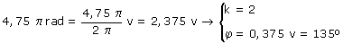
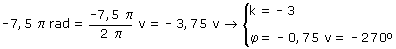

|
Posición angular A un mismo punto sobre la circunferencia le corresponden infini-tas posiciones angulares. Por ejemplo: 30º, 390º, 750º, 1110º... y -330º, -690º, -1050º... son posiciones correspondientes al mismo punto Expresiones general de las posiciones angulares de un punto: φ1 + k·2π (k = 0, 1, 2, 3,...) -φ2 + k·2π (k = 0, -1, -2, -3,...) k representa las veces que se pasa por el origen hasta alcanzar el punto (Que no es lo mismo que las vueltas dadas) Posición reducida El valor de la posición
angular, menor que 2π en valor absoluto, se denomina posición
reducida Ejemplo:  Ejemplo:  |